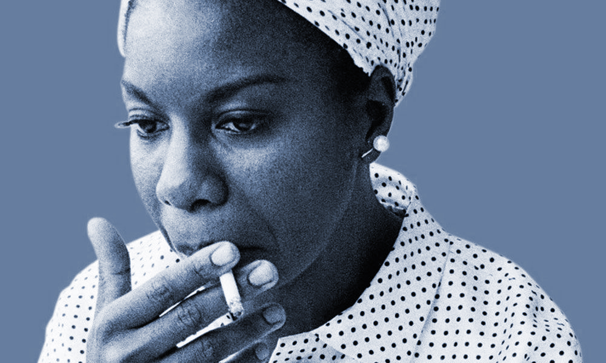

Nina Simone
Posted on July 14, 2017

One of the most influential recording artists of all time, Simone possessed a "magnificent intensity" that "turns everything—even the most simple, mundane phrase or lyric—into a radiant, poetic message."